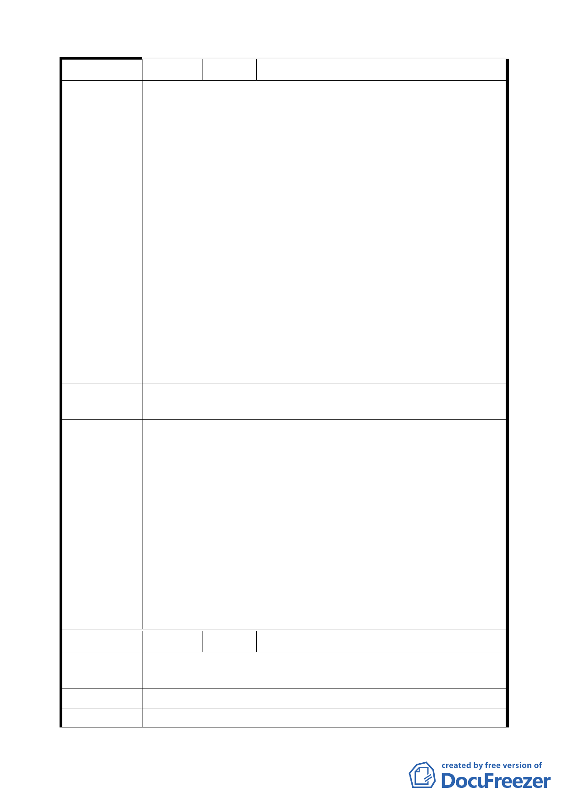

編
號3
陳情人 陳章煒等 15 人
一、本區域範圍為「台北市市民大道五段北側，自光復南路往
東至八德路四段 106 巷所圍三大區塊內」（稱本區域），現
貴府公告都市計畫分區使用變更為住三之ㄧ（特）、建蔽
率 45％、容積率 225％。
二、本區域現皆為二十年以上屋齡四樓、五樓老式公寓建物，
早年依建蔽率 60％興建，換算容積率約為 240％、300％
（60％×4f、5f），亦即本區域內現有建物使用容積皆高於
貴會今所公告容積率 225％，縱使外加獎勵容積亦甚低落
不足，此當無誘因促使所有權人拆除更新改建之意願，祈
陳情理由
盼貴委員會重新考量此最現實因素。
三、另本區域旁京華城百貨貴會單獨劃定為商業區，卻因本區
域皆為住宅區，雖與其毗鄰，但京華城範圍獨立區塊，商
業區域未擴大連結本區域，商區匯集不足，流動人潮稀
少，致商業行為低迷蕭條，地方未能繁榮。
四、又本區域建物早年因縱貫鐵路阻斷及噪音影響皆背向鐵路
建築，現該鐵路拆除開闢大道，原本建物「後窗」卻變成
臨市民大道正面，其貌寢陋無比，殷盼提高建築容積率加
速所有權人改建意願，以利都市觀瞻，並與對面即將新闢
之「台北體育文化園區」相互呼應，相得益彰。
建議辦法
惠請提高本區域建蔽率、容積率並劃定為商業區，俾地盡其
利，並加速都市更新改建意願，提升都市景觀。
1、京華城購物中心係採回饋 30％土地、繳納回饋代金、興闢
公共設施（公園廣場用地及偶戲博物館）等回饋方式，始
得由第 3 種工業區變更為第 3 種商業區。
2、本案原變更市民大道兩側地區第 4-1 種、第 4 種、第 3-2
種、第 3-1 種、第 3 種住宅區及道路用地為第 3 種商業區
（特），除建蔽率以原建蔽率加 5％計算外，土地使用分區
委 員 會 決 議 管制悉依 84 年公告實施之「修訂臺北市主要計畫商業區
（通盤檢討）計畫案」相關規定辦理，經提送 96.3.13 內政
部都委會第 654 次審議決議（略以）：「本案仍應維持原計
畫。」。
3、本案已研提時程獎勵及劃定全區為都市更新地區以適用都
市更新條例各項容積獎勵作為開發誘因，本項仍依公展計
畫辦理。
編
號4
陳情人 黃敏修
陳情理由
市民大道與基隆路口變更為公園用地，其相鄰對街即基隆路、
寶清街與八德路路口，街廓同列入市民大道獎勵範圍。
建 議 辦 法 基隆路、寶清街與八德路相鄰街廓同列入市民大道獎勵範圍。
委 員 會 決 議 本案計畫範圍以沿市民大道（新生北路至基隆路段）兩側進深
6